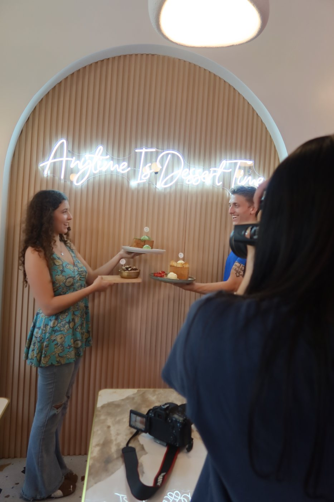
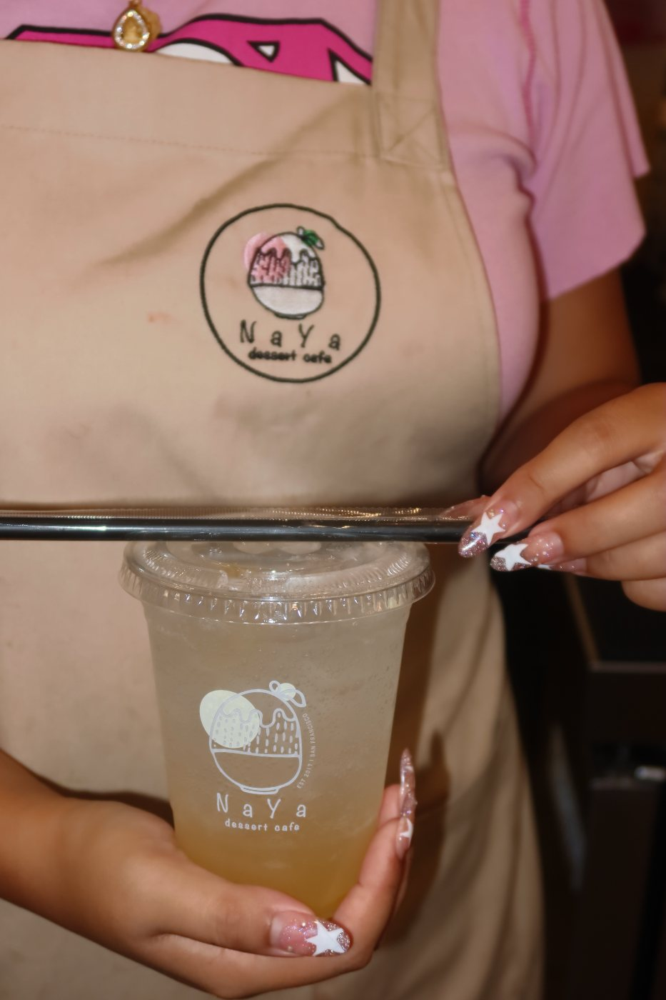
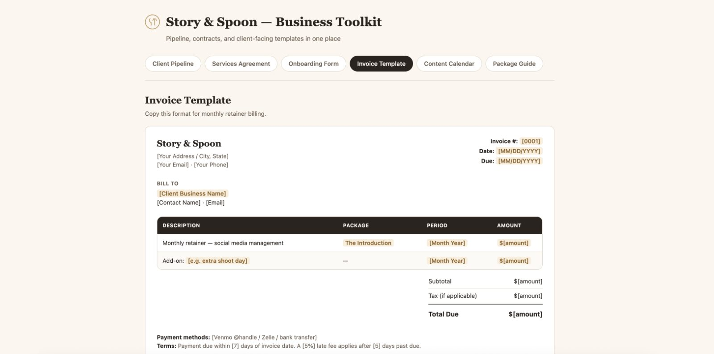
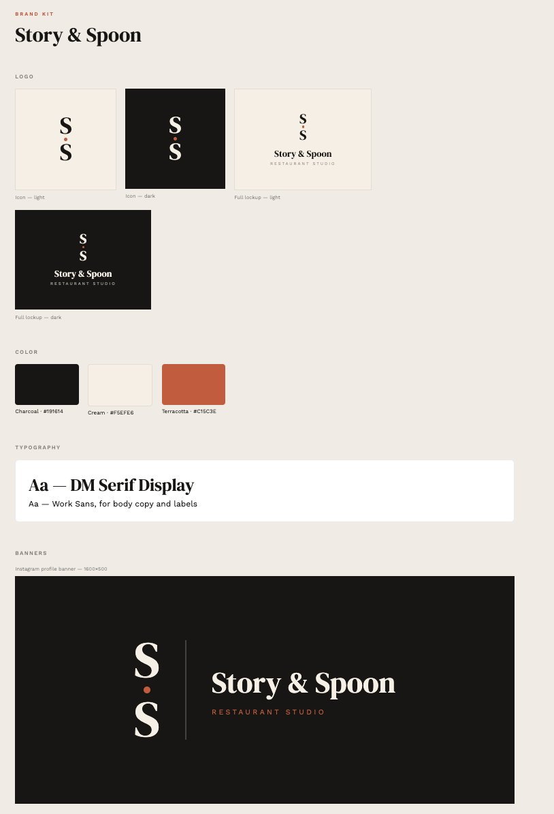

A marketing studio for the restaurants nobody markets.
Local restaurants have great food and no time for marketing. We build their website, Instagram, and Google presence from one shoot day.
First client signed and shot. Results are still coming in — these numbers are the groundwork that got us there.
Shoot day, in practice.
I directed the shoot: menu styling, talent, and on-set camera work. The photos below are from that day.



The food was the easy part.
After 30+ collabs with local restaurants through DavisWithMaya, I saw the same gap every time: an Instagram nobody ran, a broken or missing website, and wrong hours on Google. Story & Spoon turns that gap into a product.
Half Past: the demo we pitch with.
A concept café-by-day, bar-by-night that we branded like a real client, so owners can see exactly what they’d get before they sign.
03 · FROM THE PITCH DECKSee the pitch deck slidesExpand +
THE OPERATING SYSTEMPipeline tracker, invoices, and brand kit — built before client oneExpand +



THE PROOF BEHIND IT30+ restaurant collabs owners have already seenExpand +
A venture in market, not a finished story.
No client results yet. What’s here is the judgment and the system.